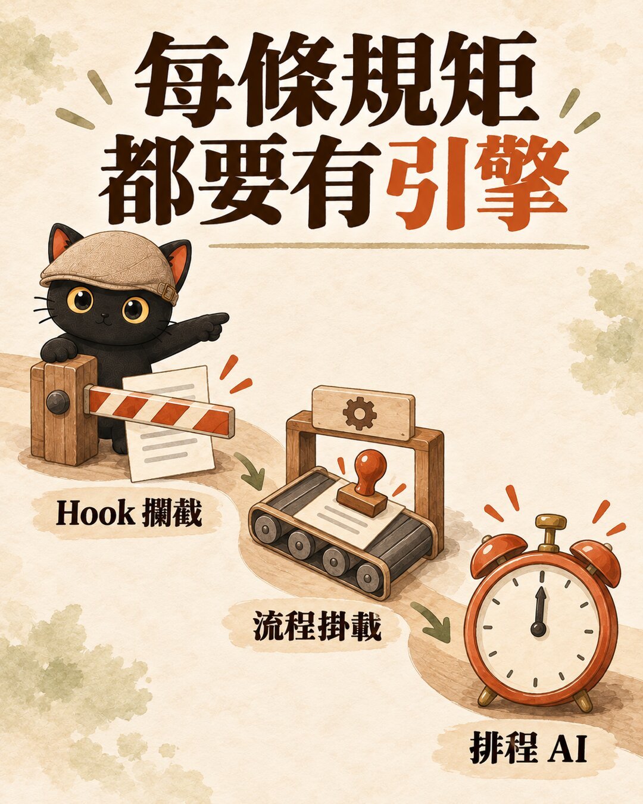
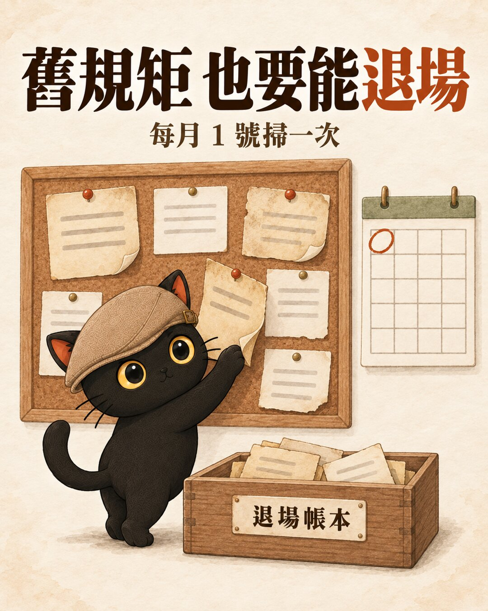
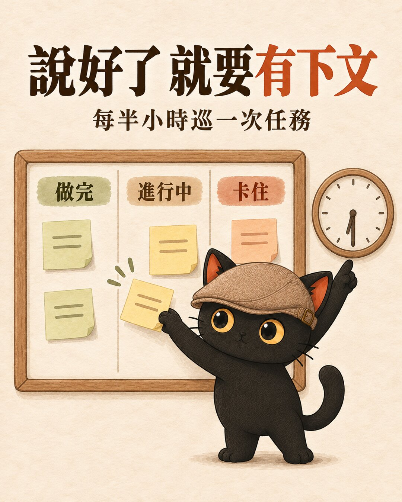

我的 AGENTS.md 規則越寫越多，就想說是不是要有清除跟退場的機制。我自己的結論是：規則寫下來不會自己動。每一條要 AI 持續做的規矩，都要指定一個「引擎」去執行它；指不出引擎的，就不要立成常設規則。這篇用兩個真實案例講清楚機制、引擎和退場，最後附一段可以直接貼給 AI 的檢查提示詞。
- 你寫了一份規則給 AI（AGENTS.md、CLAUDE.md 或自訂指令），寫完覺得放心了，回頭看卻發現很多條沒人在做。
- 你交代 AI 一件事，它回「好，我去處理」，然後就沒下文。
- 你幫團隊或客戶訂過工作規範，三個月後沒人照做，想知道問題出在哪。
- 立規矩除了機制，還要搭配引擎。引擎有三種：Hook 機械攔截、掛在既有流程的某一步、排程 AI 定時跑。
- 規矩也要能退場：AGENTS.md 現在每個月 1 號自動掃一次，太舊、沒在用、已有別處承接的條文就退場。
- 引擎本身也要被檢查：登記觸發點與完成證據，每月看它有沒有真的在跑。
規則寫好看而已：我以前怎麼立規矩
最近有個從 AI 短劇紅起來的梗叫「不燒心」，講的是守規矩、讓人省心。
我這週也在立規矩，對象是 AI。我有一份寫給 AI 看的規則檔，叫 AGENTS.md，所有 AI 助手開工前都會先讀它。規則越寫越多，我就想加一個清除跟退場的機制。我在脆上是這樣寫的：
AGENTS.md、機制、引擎、退場機制，四個詞先講清楚
| 詞 | 白話 | 我這邊的例子 |
|---|---|---|
| AGENTS.md | 寫給 AI 看的規則主檔。Codex 這類 AI 工具開工時會直接讀它，Claude Code 透過 CLAUDE.md 引入同一份 | 我的知識庫只有一份 AGENTS.md 當規則主檔，各家 AI 讀同一份 |
| 機制 | 一條要持續做的規矩：做什麼、什麼時候做、做到什麼程度算完成 | 「每個月把太舊的規則退場」 |
| 引擎 | 真的會去執行那條規矩的東西：一支會攔截的程式、一個本來就會發生的流程、一個到點就跑的排程 | 每月 1 號的知識庫健檢 |
| 退場機制 | 規矩也會過期。過期的要能拿掉或整併，規則檔才不會只長不短 | 三個條件同時成立才退場：立法滿 90 天、近 90 天沒用到、事情已經有 Hook 或技能包承接；退之前先備份、給另一家 AI 審 |
為什麼寫給 AI 的規則，寫了也沒人執行
這件事我盤過幾次。
- 2026 年 7 月 16 日做知識庫大健檢，結論只有一句：活的機制全有機器觸發器，死的全掛在「有空的人類」身上。
- 7 月盤自己寫給 AI 的約 220 條規則，真的有機制在執行的約 24 條（2026-07-22〈規則檔越寫越長〉那篇）。
- 7 月 22 日我還裝了一個攔截器，每次改規則檔就跳出來問「掛在哪個執行器上？」。它只會問、問完就放行，裝了 52 天一次都沒擋下來。
寫進規則檔的那一刻，感覺事情已經處理好了。可是「每個月做一次」的事，AI 不會自己算日子；「有空的時候看一下」的事，人通常沒空。沒有東西在對的時間把它叫起來，這條規則就只是放在那裡。
- 規則檔越寫越長，AI 有照做嗎？：那 220 條是怎麼盤的、哪些完全靠 AI 自己記得。
- AI 規則檔裝了攔截器，52 天一條都沒擋下來：只會提醒的攔截器為什麼擋不住，後來怎麼改成真的會擋。
三種引擎：Hook 機械攔截、流程掛載點、排程 AI

現在我在 AGENTS.md 寫死一條：新立一條要持續執行的規矩，一定要掛上三種引擎之一。三種都掛不上，AI 不能自己把它立成常設規則，要列出「改成一次性任務、當純參考、不做」這幾個選項，讓我決定。
| 引擎 | 白話 | 適合哪種規矩 | 我這邊的例子 |
|---|---|---|---|
| Hook 機械攔截 | AI 要做某個動作的當下，程式先檢查，不合規就擋下 | 漏了代價高、會重複犯的 | AI 要下強制刪除整個資料夾的指令會被擋，刪除只能走 safe-trash，搬到垃圾區 |
| 既有流程的事件掛載點 | 掛在一件本來就會發生的事上，那件事發生時順便做 | 跟著某個流程走的事 | 每批規則退場，同一輪就寫一篇觀點日記 |
| 排程 AI | 到點就叫 AI 起來做事 | 要定期做、沒有現成事件可掛的 | 每月 1 號知識庫健檢；朵拉每半小時巡一次任務清單 |
- 改完規則，怎麼知道 AI 到底有沒有變乖？：寫得成程式判斷的規則掛機械攔截，剩下的要怎麼觀察。
案例一：AGENTS.md 的規則退場機制（2026-10-20）
起因是我自己說的話：
每個月健檢的時候，AGENTS 太舊的規則就直接退場了，或是整併然後退場。當然是要留一個工作日誌，AGENTS.md 應該有一個獨立的工作日誌，去查哪些規則。

| 拆開看 | 內容 |
|---|---|
| 機制 | 三個條件同時成立就退場：立法滿 90 天、近 90 天沒有命中證據（Hook 觸發、工作日記提到、技能包引用）、事情已經有 Hook 或技能包承接。純公告句（「某某已停用」這種）不計 90 天 |
| 引擎 | 每月 1 號知識庫健檢裡的規則掃描步驟：逐條讀 AGENTS.md，到工作日記、Hook、技能包三個地方搜關鍵詞，列出候選與處置 |
| 處置 | 直接退場或整併後退場，不逐條問我；但要先備份 AGENTS.md、給不同公司的 AI 輕量審過，沒審過就只列候選不刪 |
| 留紀錄 | 獨立帳本 rule-retirement-log.md：退了哪條、原文、理由、事實現在由誰承接，一條一列；每批退場同一輪寫一篇觀點日記 |
第一批退了四條公告句：邀約看板停用與技能包看板退場、戰情室退場、凍結舊總表的指向、愛馬仕退役。四條裡還活著的事實，先各自搬到該去的地方才刪。例如「約件時間敲定進 Google Calendar」併進日曆那條；愛馬仕「不安裝、不更新、不啟動」寫進新電腦安裝自檢段。
AGENTS.md 從 26,443 字降到 26,360 字。第一批很小，重點是從這個月起，每個月 1 號都會再掃一次。
案例二：AI 小編回一句「OK 去處理」，然後就沒下文

朵拉是我的 AI 實習生小編，Threads 帳號 @dora_aicat，簡介公開標明是 AI。我在脆上標註她交代事情，她會先回一則接單。
規則裡其實早就寫了：接收和開始執行要分開說，寫進任務清單只證明登記，不證明有人接手。但光寫這句，任務還是不會被做完。10 月 19 日晚上我跟 AI 說：
第一版引擎（10/19）：Claude Code 排程 dora-task-loop，每天 09:15 起每兩小時一輪，到 23:15，每輪最多接 3 件，最舊的先做；做完回在原本那串，再推播一則摘要給我。
10/20 補強：我又加了幾句：
等我授權的也要回應。
| 改了什麼 | 做法 |
|---|---|
| 巡查頻率 | 每天 09:05 到 23:35，每半小時一輪 |
| 到期檢查 | 每輪先全部掃一次：收到超過 30 分鐘、還沒做完的，上次回報已超過兩小時就要在原串回一則；等授權的照下一列的 24 小時節奏；系統本身壞掉的只推播給我，不在 Threads 洗版 |
| 回報分三種 | 做完（唯一會結案的）、進行中（寫做到哪一步）、卡住（寫卡在什麼，請江江有空再回） |
| 等授權的也有聲音 | 問過之後每 24 小時提醒一次「朵拉還在等江江○○」 |
| 列表與看板 | 任務清單 tasks.json 是唯一真相，Trello「AI 員工任務板」由它自動生成，不手改 |
| 防重複 | 每輪開始前先看上一輪是不是還在跑，在跑就這輪不做；同一件事兩小時內不重複回「進行中」 |
我當時說這是迴圈工程。規則寫的是「應該怎樣」，排程才是到點會把 AI 叫起來的東西：每天 09:05 到 23:35，每半小時巡一次。它有沒有每輪都真的跑，還要靠下一段講的檢查。
- 每件事 AI 都要我確認，怎麼可以更自動？｜什麼是迴圈工程：一個迴圈的五個階段與最少零件，朵拉的任務巡查就是其中一種。
怎麼確保規則和引擎不會出錯
| 可能出的錯 | 我現在的做法 |
|---|---|
| 立了規矩，卻沒掛引擎 | 新立常設機制前，先在機制清單登記觸發點和完成證據；掛不上引擎就不立 |
| 引擎停了，沒人發現 | 每月健檢逐列判：該跑的時候第一次沒跑，列修復候選；連續兩次沒跑，列退場候選；還沒到觸發點的不算 |
| 安全類規則很少觸發，被誤判成沒用 | 安全、Secret、權限、備援、法遵、對外承諾、跨家審查這幾類，不能只因為沒有啟動紀錄就退場，改查入口、誰負責、還能不能用 |
| 同一件事寫在兩個地方，改了一邊忘了另一邊 | 一件事只指定一個正本，其他地方自動生成或引用；朵拉的任務清單是正本，Trello 看板是畫面。真的需要人工同步的，要登記用途、誰負責、怎麼驗 |
| 退場刪錯 | 先備份，給不同公司的 AI 審一次，沒審過只列候選不刪；還活著的事實先搬到承接位置；帳本留原文 |
檢查你自己的 AI 規則：三個問題和一段提示詞
- 這條是要「持續做」的事，還是一次性任務、純參考？只有持續做的才需要引擎。
- 誰、在什麼時候會去執行它？答案是「AI 會記得」或「我有空會看」，就等於沒有引擎。
- 它什麼時候可以退場？
可以直接貼給你的 AI：
規矩立好，才不燒心，路才能越走越寬。
- 直接抄別人的 Skills、工作流，其實沒什麼用：機制的本體是判斷，抄條文抄不到判斷，也抄不到引擎。
- 抓到 AI 偷懶之後，我把它寫進流程規則：怎麼追問 AI 有沒有真的執行外部動作。